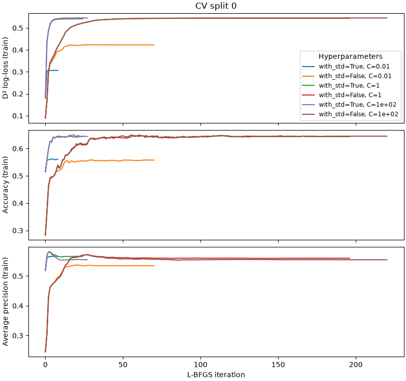
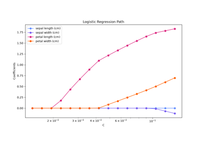

Note
Go to the end to download the full example code or to run this example in your browser via JupyterLite or Binder.
Analysis of the convergence of penalized logistic regression models#
The purpose of this example is three-fold:
Demonstrate registering a
ScoringMonitoron the logistic regression step of a pipeline nested insideGridSearchCV.Show how to plot the metric values collected at each iteration of each fit of the logistic regression model during the grid search and analyze the convergence of the model for each hyperparameter combination.
Show how the monitoring of diverse scoring metrics can inform us about the quality of the model and the trade-off between refinement and calibration.
# Authors: The scikit-learn developers
# SPDX-License-Identifier: BSD-3-Clause
Setup#
Let’s first define the pipeline and the grid search. Here we register a
ScoringMonitor callback on the logistic regression model to monitor
the scores at each iteration of the L-BFGS solver.
We reuse the same scoring metrics for the grid search itself and use the D² log-loss as the primary metric to select the best hyperparameter combination.
import matplotlib.pyplot as plt
import numpy as np
import pandas as pd
from sklearn.callback import ProgressBar, ScoringMonitor
from sklearn.datasets import make_classification
from sklearn.linear_model import LogisticRegression
from sklearn.model_selection import GridSearchCV
from sklearn.pipeline import make_pipeline
from sklearn.preprocessing import StandardScaler
X, y = make_classification(
n_samples=1000, n_features=100, n_classes=10, n_informative=30, random_state=42
)
scoring_metrics = ["d2_log_loss_score", "accuracy", "average_precision"]
scoring_monitor = ScoringMonitor(scoring=scoring_metrics)
model = make_pipeline(
StandardScaler(),
LogisticRegression(solver="lbfgs", max_iter=1000).set_callbacks(scoring_monitor),
)
param_grid = {
"standardscaler__with_std": [True, False],
"logisticregression__C": np.geomspace(0.01, 100, 3),
}
grid_search = GridSearchCV(
model,
param_grid,
cv=5,
scoring=scoring_metrics,
n_jobs=2,
error_score="raise",
refit=scoring_metrics[0],
)
Let’s fit the grid search with the auto-propagating progress bar callback. Feel free to set max_propagation_depth=3 in the ProgressBar constructor to get a more detailed output by displaying the progress bars for the pipeline, the standard scaler and the logistic regression.
grid_search.set_callbacks(ProgressBar()).fit(X, y)
GridSearchCV - fit ━━━ 100% 0:0…
GridSearchCV - search #0 ━━━ 100% 0:0…
GridSearchCV - candidate-split-evaluation | Pipeline - fit #0 ━━━ 100% 0:0…
GridSearchCV - candidate-split-evaluation | Pipeline - fit #1 ━━━ 100% 0:0…
GridSearchCV - candidate-split-evaluation | Pipeline - fit #2 ━━━ 100% 0:0…
GridSearchCV - candidate-split-evaluation | Pipeline - fit #3 ━━━ 100% 0:0…
GridSearchCV - candidate-split-evaluation | Pipeline - fit #4 ━━━ 100% 0:0…
GridSearchCV - candidate-split-evaluation | Pipeline - fit #6 ━━━ 100% 0:0…
GridSearchCV - candidate-split-evaluation | Pipeline - fit #5 ━━━ 100% 0:0…
GridSearchCV - candidate-split-evaluation | Pipeline - fit #7 ━━━ 100% 0:0…
GridSearchCV - candidate-split-evaluation | Pipeline - fit #8 ━━━ 100% 0:0…
GridSearchCV - candidate-split-evaluation | Pipeline - fit #10 ━━━ 100% 0:0…
GridSearchCV - candidate-split-evaluation | Pipeline - fit #9 ━━━ 100% 0:0…
GridSearchCV - candidate-split-evaluation | Pipeline - fit #11 ━━━ 100% 0:0…
GridSearchCV - candidate-split-evaluation | Pipeline - fit #12 ━━━ 100% 0:0…
GridSearchCV - candidate-split-evaluation | Pipeline - fit #13 ━━━ 100% 0:0…
GridSearchCV - candidate-split-evaluation | Pipeline - fit #14 ━━━ 100% 0:0…
GridSearchCV - candidate-split-evaluation | Pipeline - fit #16 ━━━ 100% 0:0…
GridSearchCV - candidate-split-evaluation | Pipeline - fit #15 ━━━ 100% 0:0…
GridSearchCV - candidate-split-evaluation | Pipeline - fit #17 ━━━ 100% 0:0…
GridSearchCV - candidate-split-evaluation | Pipeline - fit #18 ━━━ 100% 0:0…
GridSearchCV - candidate-split-evaluation | Pipeline - fit #19 ━━━ 100% 0:0…
GridSearchCV - candidate-split-evaluation | Pipeline - fit #20 ━━━ 100% 0:0…
GridSearchCV - candidate-split-evaluation | Pipeline - fit #21 ━━━ 100% 0:0…
GridSearchCV - candidate-split-evaluation | Pipeline - fit #22 ━━━ 100% 0:0…
GridSearchCV - candidate-split-evaluation | Pipeline - fit #23 ━━━ 100% 0:0…
GridSearchCV - candidate-split-evaluation | Pipeline - fit #24 ━━━ 100% 0:0…
GridSearchCV - candidate-split-evaluation | Pipeline - fit #25 ━━━ 100% 0:0…
GridSearchCV - candidate-split-evaluation | Pipeline - fit #26 ━━━ 100% 0:0…
GridSearchCV - candidate-split-evaluation | Pipeline - fit #27 ━━━ 100% 0:0…
GridSearchCV - candidate-split-evaluation | Pipeline - fit #28 ━━━ 100% 0:0…
GridSearchCV - candidate-split-evaluation | Pipeline - fit #29 ━━━ 100% 0:0…
GridSearchCV - refit-with-best-params | Pipeline - fit #1 ━━━ 100% 0:0…
We use a grid search with 3 values for the regularization parameter C and
2 values for the standardization of the features resulting in 6 parameter
combinations.
Since we use 5-fold cross-validation (cv=5), we will have 5 fits of the
logistic regression model for each parameter combination resulting in 30 fits
as subtasks of the “search” fit task.
In addition, the grid search performs a final refit on the full dataset with the best hyperparameter combination found during the grid search. This is visible as the “refit-with-best-params” task in the output above.
Consolidation of the grid search results#
Let’s look at the results of the grid search.
cv_results = pd.DataFrame(grid_search.cv_results_)
cv_results.sort_values(by="rank_test_d2_log_loss_score", ascending=True)
We observe that the best models use regularization (small C). Feature
standardization does not seem to matter much but helps reduce the fit times.
We notice that many models have similar accuracy scores but different D²
log-loss scores and average precision scores. D² log-loss and average
precision are more sensitive to the quality of the model than accuracy
because they evaluate the entire probability distribution of the predictions
rather than just the match of the top predicted class with the true class.
Let’s now refine this analysis by looking at the same metrics computed on the
training set at each iteration of the L-BFGS solver and for each parameter
combination. Note that these are training-set scores recorded during L-BFGS
iterations, not the held-out CV scores from cv_results_.
These values are stored in the scoring_monitor callback object:
all_tasks_log = scoring_monitor.get_logs().data_as_pandas
all_tasks_log
Let’s enrich this log with the candidate parameters and the split index so we can plot the scores for each parameter combination for a particular CV split of interest.
candidate_params = pd.DataFrame(grid_search.cv_results_["params"]).add_prefix("param_")
n_splits = grid_search.n_splits_
lbfgs_log = all_tasks_log.query(
"estimator_name == 'LogisticRegression' and task_name == 'lbfgs-iter'"
).copy()
# Index 2 in ``task_id_path`` is the ``candidate-split-evaluation`` task id.
# Future versions of scikit-learn will provide a more convenient way to
# retrieve this task id.
lbfgs_log["eval_task_id"] = lbfgs_log["task_id_path"].map(lambda path: path[2])
lbfgs_log["candidate_idx"] = lbfgs_log["eval_task_id"] // n_splits
lbfgs_log["split_idx"] = lbfgs_log["eval_task_id"] % n_splits
lbfgs_log = lbfgs_log.query("split_idx == 0").join(candidate_params, on="candidate_idx")
Exclude the final refit on the full dataset (parent_task_id_path
starts with (0, 1) instead of (0, 0) for cross-validation fits). Note
that it is possible to call scoring_monitor.get_logs(include_lineage=True)
to retrieve the task name of the ancestor tasks if needed.
cv_lbfgs_log = lbfgs_log[
lbfgs_log["parent_task_id_path"].map(lambda path: path[1]) == 0
]
We define labels for plotting purposes and plot each metric separately.
cv_lbfgs_log["param_label"] = cv_lbfgs_log.apply(
lambda row: (
f"with_std={row['param_standardscaler__with_std']}, "
f"C={row['param_logisticregression__C']:.2g}"
),
axis=1,
)
metrics = {
"d2_log_loss_score": "D² log-loss (train)",
"accuracy": "Accuracy (train)",
"average_precision": "Average precision (train)",
}
_, axes = plt.subplots(
len(metrics),
1,
figsize=(8, 2.5 * len(metrics)),
sharex=True,
constrained_layout=True,
)
for idx, (metric, ylabel) in enumerate(metrics.items()):
ax = axes[idx]
for param_label, group in cv_lbfgs_log.groupby("param_label", sort=False):
ax.plot(group["task_id"], group[metric], label=param_label)
ax.set_ylabel(ylabel)
if idx == 0:
ax.set_title("CV split 0")
ax.legend(title="Hyperparameters", fontsize="small")
_ = axes[-1].set_xlabel("L-BFGS iteration")

Analysis of the convergence of the logistic regression models#
D² log-loss convergence#
The D² log-loss scores generally improve monotonically for all models. This is expected because the logistic regression model is fitted by minimizing the (regularized) log-loss computed on the training set.
Accuracy fluctuations#
The accuracy score improves with the number of iterations, albeit with some local fluctuations. This is expected because accuracy is discontinuous and not directly optimized by the model. Instead the model minimizes the log-loss which is a smooth surrogate for the zero-one loss (and thus related to, but not directly optimized by, accuracy).
Regularization and scaling#
We also observe that the least regularized models (larger C values) tend
to reach higher D² log-loss scores, and models trained on scaled features
converge in much fewer iterations.
Furthermore, models trained with high regularization (lower C values)
converge to a final D² log-loss value that depends on the regularization
strength while this is not the case for models trained with low
regularization: there is a strong coupling between the optimal regularization
strength and the feature scaling.
Average precision vs log-loss, refinement vs calibration#
Finally, we observe that the average precision value measured on the training set can improve quickly in the first iterations and then worsen even though the D² log-loss value continues to improve on the same training data. This is especially noticeable for models trained with low regularization and feature standardization. This counter-intuitive behavior can be explained as follows. First recall that average precision is a pure ranking metric that measures the ability of the model to output predicted probabilities that rank the samples of a given class higher than the samples of the other classes, but does not take into account the calibration of the predicted probabilities. In other words, average precision only evaluates if the predicted probabilities are well ordered relatively to one another but is insensitive to a rank preserving transformation of their absolute values. The log-loss, on the other hand, is a strictly proper scoring rule that accounts for both the refinement (ranking power) of the model and the calibration of the predicted probabilities.
Therefore, the average precision curves of the low-regularized models trained on scaled features suggest that the first iterations mostly improve refinement of the models temporarily leaving calibration behind. In later iterations, the log-loss score continues to improve but average precision values worsen, which suggests that the logistic regression model progressively trades off refinement for calibration over the course of the final iterations. This phenomenon has been studied in [1].
It would be interesting to see if this also happens when evaluating the model on a validation set so we could implement early stopping on average precision to explicitly select a model with high refinement on a validation set. This is not yet possible at the time of writing. Giving callbacks access to the validation set is planned for a future version of scikit-learn. Note that the callbacks API is still experimental and may change without the usual deprecation cycle.
References#
Total running time of the script: (0 minutes 25.893 seconds)
Related examples

Custom refit strategy of a grid search with cross-validation


Comparing randomized search and grid search for hyperparameter estimation

Regularization path of L1- Logistic Regression